Yeastar S-серия и Bitrix24
Для подключения интеграции необходимо поочередно выполнить пункты данного руководства в той последовательности, как они описаны.
Схема взаимодействия сервиса
Представленная схема демонстрирует, как происходит взаимодействие между Битрикс24, IP-АТС Yeastar и сервисом Callbee. 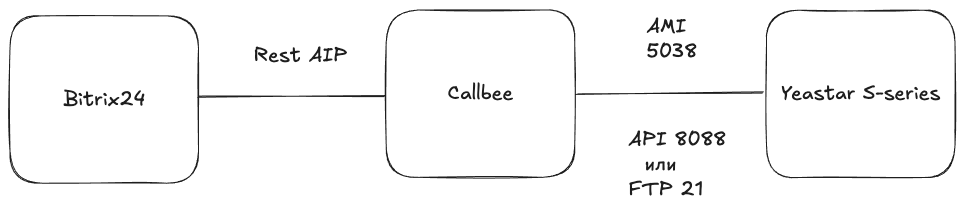
Необходимые требования
- IP-АТС серии S (S20, S50, S100, S300).
- Статический IP-адрес
- Личный кабинет Callbee.
- Активная лицензия Битрикс24.
- Активная подписка на Битрикс24.Маркет для пользователей из России.
- Доступ к TCP портам 5038, 8088 либо (21 для S20) IP-АТС Yeastar с разрешенных адресов сервиса.
1. Установка приложения Callbee | FreePBX и Yeastar в amoCRM
- Находим приложение Callbee | FreePBX и Yeastar в Битрикс24 Маркетплейс. 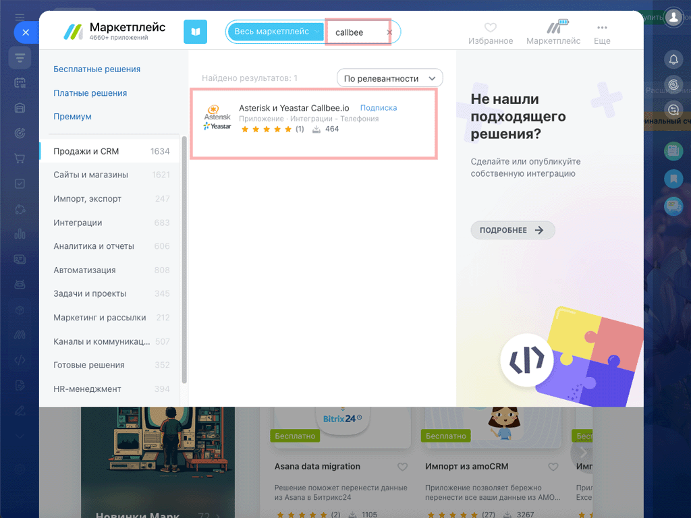
- Устанавливаем приложение, ознакомившись и подтвердив согласие с Правилами использования каталога решений, Лицензионным Соглашением и Политикой Конфиденциальности. Далее нажать кнопку Установить. 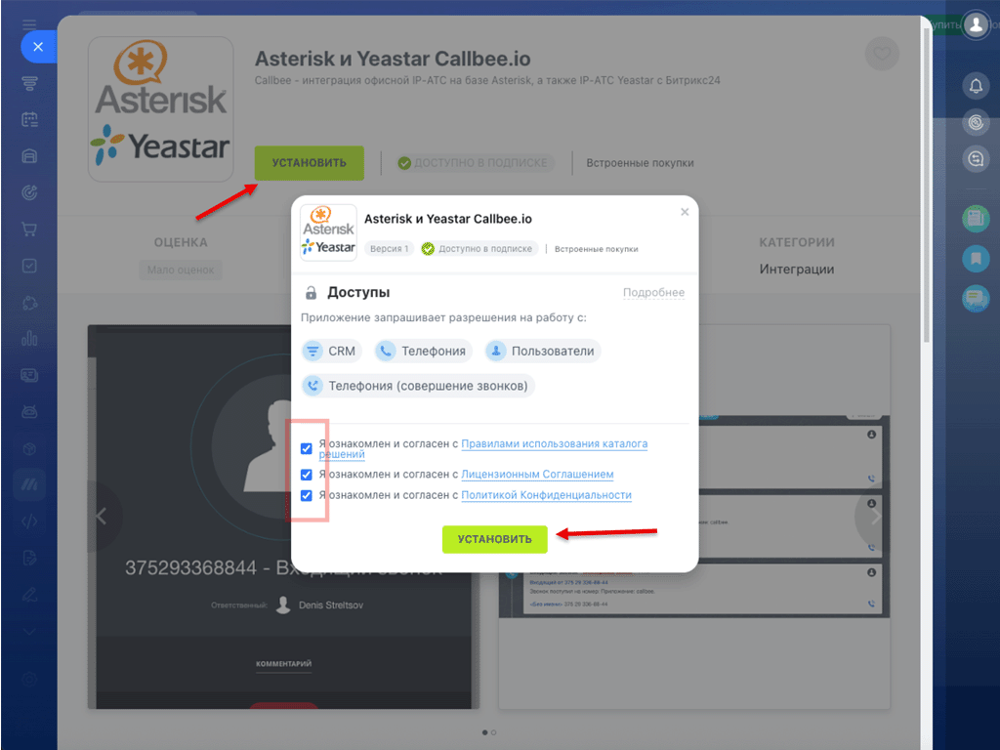
Поздравляем! Вы установили приложение Callbee | FreePBX и Yeastar.
2. Настраиваем подключение сервиса к IP-АТС
Успешность интеграции зависит от корректной настройки подключения сервиса к AMI, а также к API или FTP станции Yeastar. Пожалуйста, помните, что для модели S20 API недоступно.
2.1 Настройка сетевых служб - AMI
Шаги для активации и настройки AMI IP-ATC:
- Откройте админ-панель IP-АТС и перейдите в раздел Настройки > Система > Безопасность. На вкладке Сетевые службы найдите и активируйте пункт "Включить AMI".
- Измените стандартные "Имя пользователя" и "Пароль" для AMI. Эти учетные данные потребуются для указания в личном кабинете Callbee.
- В появившемся поле "Разрешённые IP/Маска" пропишите IP-адреса из списка адресов сервиса. 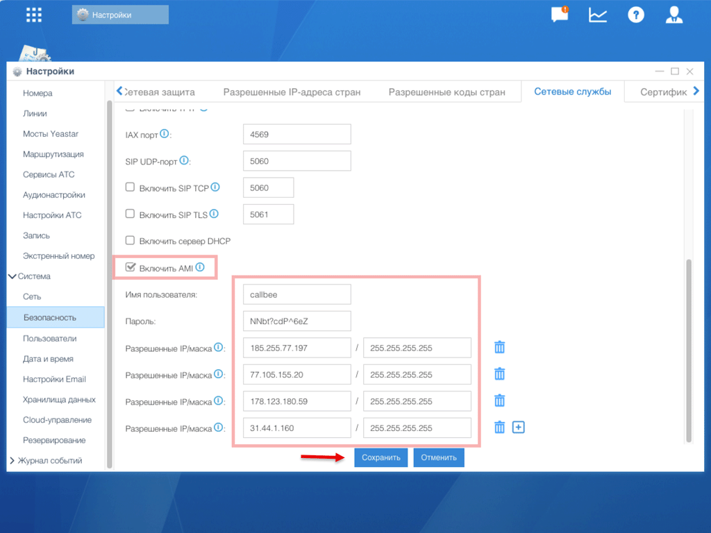
- Измените протокол с HTTPS на HTTP (только если на АТС не установлен валидный SSL-сертификат). 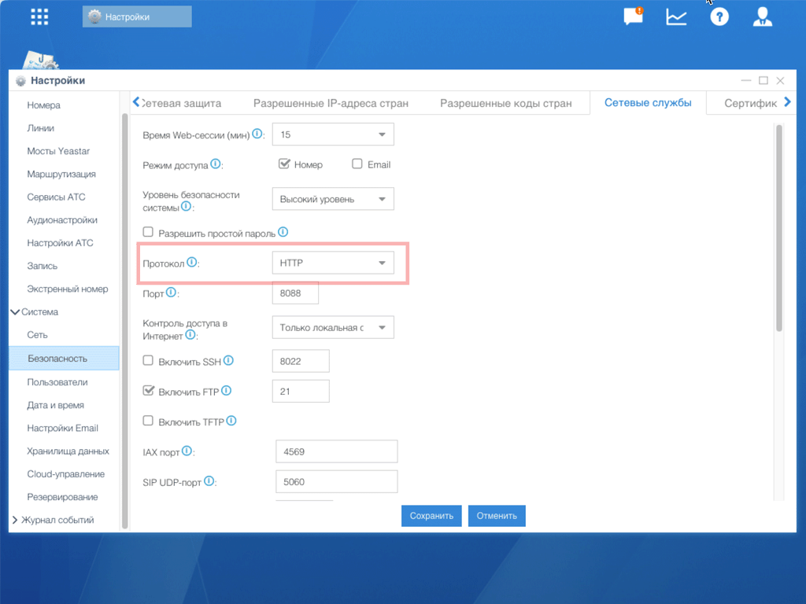
- Сохраните внесенные изменения, нажав кнопку "Сохранить".
2.2 Настройки Yeastar API
Шаги для активации и настройки API Yeastar:
- Откройте админ-панель IP-АТС и перейдите в раздел Настройки > АТС > API.
- На вкладке API найдите и активируйте опцию "Активировать API".
- Задайте "Имя пользователя API" и "Пароль API". Эти учетные данные понадобятся вам для настройки подключения в личном кабинете Callbee.
- Сохраните внесенные изменения, нажав кнопку "Сохранить". 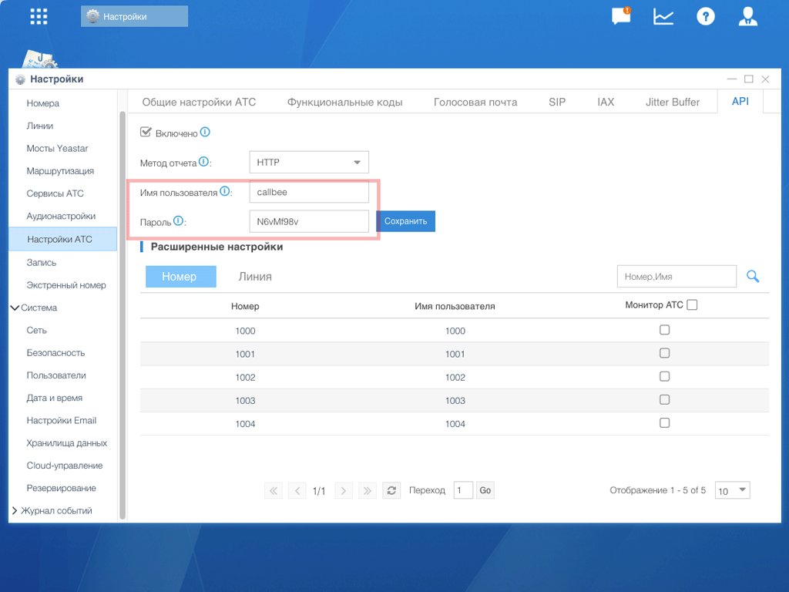
2.3 Настройка хранилища данных (FTP) Только Yeastar S20
Шаги для активации FTP:
- Перейдите в раздел Настройки > Система > Хранилища данных.
- Во вкладке File Share найдите и активируйте опцию "Активировать FTP доступ".
- Сохраните внесенные изменения, нажав кнопку "Сохранить".
Получение пароля FTP:
Данные доступа к FTP совпадают с данные подключения к SSH. Логин support. Пароль нужно получить при активации SSH.
- Откройте админ-панель IP-АТС и перейдите в раздел Настройки > Система > Безопасность.
- На вкладке Сетевые службы найдите и активируйте пункт "Включить SSH". Эти учетные данные потребуются для указания в личном кабинете Callbee при настройке FTP. 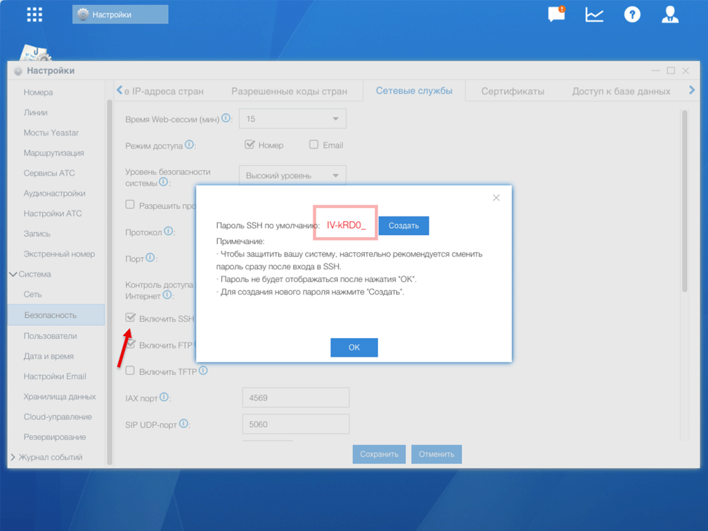
3. Сетевые настройки
Для того, чтобы интеграция могла подключиться к вашей АТС, у вас обязательно должен быть статический IP-адрес и проброшены через NAT к АТС следующие порты:
- 5038 TCP – для доступа к AMI Yeastar.
- 21 TCP – для доступа к FTP Yeastar (для Yeastar S20).
- 8088 (порт к WEB интерфейсу по умолчанию) HTTP/HTTPS – для доступа к API Yeastar.
4. Создание и подключение сервиса в личном кабинете my.callbee.io
Следуйте этим шагам для настройки сервиса в личном кабинете:
- Войдите в личный кабинет
my.callbee.io. - Запустите установщик, который поможет создать сервис.

- В разделе выбора CRM системы:
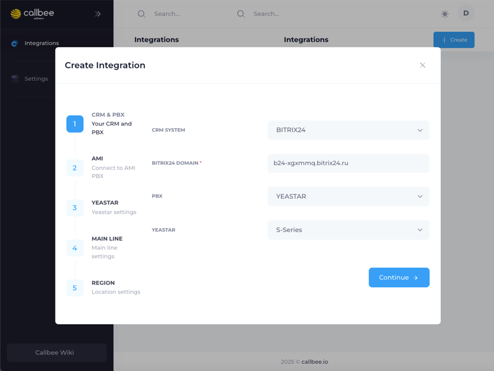
- Выберите "BITRIX24" из списка.
- Введите адрес вашей amoCRM в поле "BITRIX24 DOMAIN".
- Выберите "IP-ATC Yeastar".
- Укажите серию вашей IP-АТС Yeastar (например, "S").
- Нажмите "Continue" для перехода к следующему шагу.
- Настраиваем подключение к AMI:

- Введите адрес и порт для подключения к AMI (обычно
5038). - Укажите AMI USERNAME и AMI SECRET, которые вы задали в пункте 2.1.
- Нажмите "Continue" для перехода к следующему шагу.
- Введите адрес и порт для подключения к AMI (обычно
- Настраиваем подключение к API:
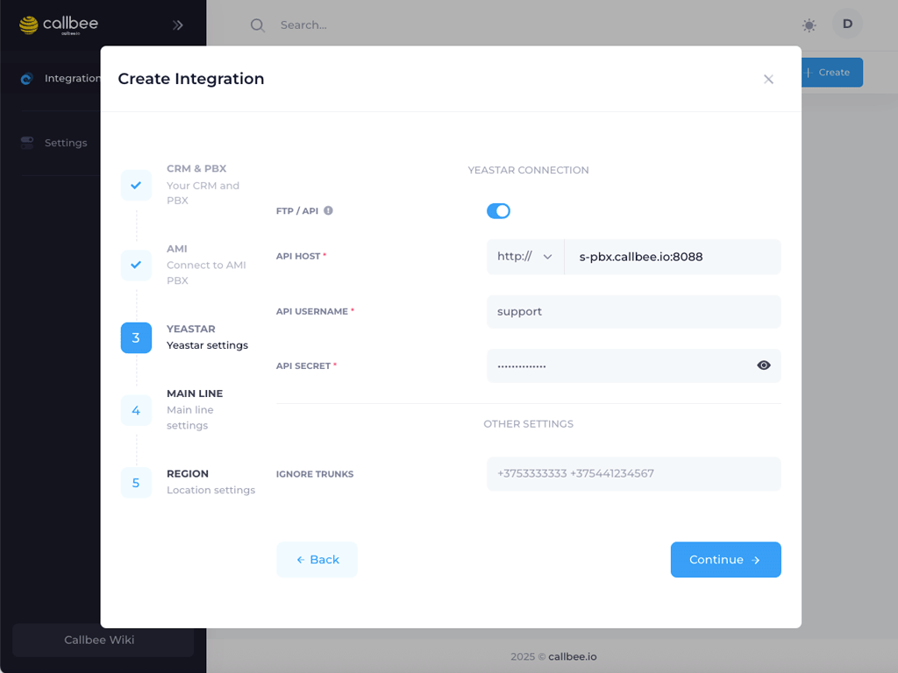
- Укажите внешний IP-адрес вашей IP-АТС в поле "API HOST". Этот адрес должен быть доступен для адресов сервиса Callbee. (обычно
8088) - Укажите API USERNAME и API SECRET, которые вы задали в пункте 2.2.
- Нажмите "Continue" для перехода дальше.
- Укажите внешний IP-адрес вашей IP-АТС в поле "API HOST". Этот адрес должен быть доступен для адресов сервиса Callbee. (обычно
-
Для S20: Настраиваем подключения к FTP::

- Введите внешний IP-адрес вашей IP-АТС в поле FTP HOST и порт (обычно
21). - Укажите FTP USERNAME и FTP SECRET, которые вы задали в пункте 2.3 (при наличии).
- Введите внешний IP-адрес вашей IP-АТС в поле FTP HOST и порт (обычно
-
Настройка правил создания сущностей: 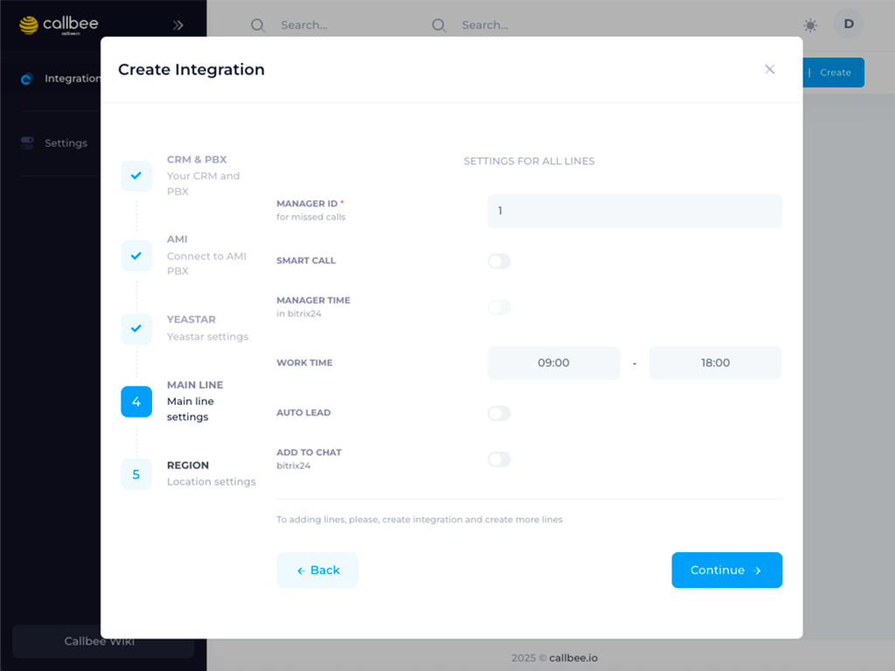
- Настройте правила для автоматического создания сделок или контактов в amoCRM. Здесь вы можете определить, при каких условиях будет создаваться новая сущность (например, при первом звонке от неизвестного номера).
- Сохраните внесенные изменения, нажав кнопку "Continue".
-
Настройка расположения и часового пояса сервиса: 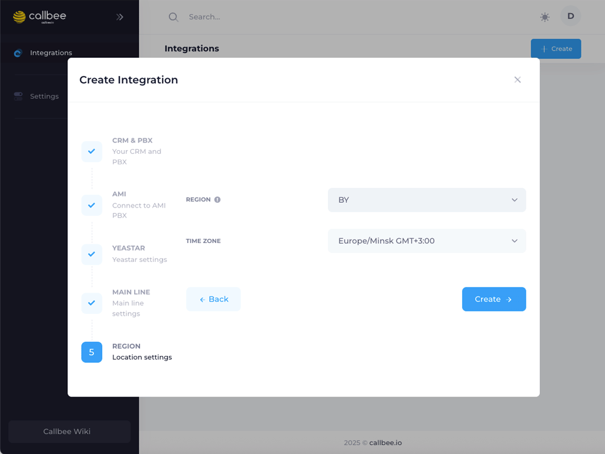
- Выберите регион расположения сервиса, наиболее близкий к вашему местоположению или местоположению ваших сотрудников. Доступны следующие опции: Беларусь, Россия, Казахстан, Нидерланды.
- Укажите часовой пояс, в котором работают ваши сотрудники. Эта настройка критически важна для корректной работы функции умной маршрутизации звонков.
- Сохраните внесенные изменения, нажав кнопку "Continue".
Поздравляем! Вы создали и запустили сервис Callbee.